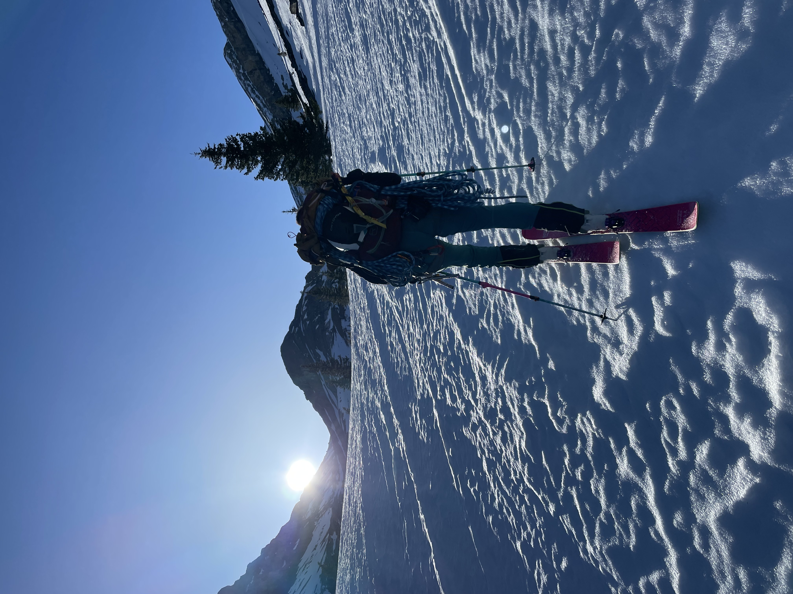

Conditions: Lake Louise — high of 20°C with 15 km/h winds.
6:30 AM — Started skinning.
7:00 AM — Arrived at the base of the waterfall.
8:00 AM — Got above the waterfall into the basin.

9:30 AM — Above the first major slope; snack break at the base of Little Hector.

10:44 AM — Roped up for glacier travel.

1:00 PM — Left skis for the final climb.

2:00 PM — Summit.

4:30 PM — Back at the car.
Snow conditions were quite nice overall. Wet slides were our primary concern, especially given our slower-than-expected ascent. That said, you gain a lot of elevation on this route and the snow was firm at the summit. It softened up considerably around Little Hector, but we hadn't seen many signs of wet slides — though this would definitely be a concern on a warmer day.
The snow got fairly mushy below the waterfall on the way down. There's a decent risk of getting caught in a wet slide here, and the exposure above you is intimidating. Once you're in the gully, the shade holds the snow up well.
Getting past the waterfall took much longer than I expected. The snow was too hard to get an edge in — I'm on 108 underfoot Line Visions — but bootpacking didn't work either. The crust broke too easily into sugary, dry snow underneath, so you just postholed. Ski crampons were the way to go here.

Above the waterfall there's a bit of scrambling. On the way down, however, you can pick a ski line through and across the waterfall. Highly recommend this approach — as long as there isn't too much water, it's fast and felt much safer than downclimbing the rock sections. You could also set up a tree anchor and rappel if you wanted.
We had a 70 m rope, which was helpful for rappelling off the anchors on Hector. There are two sets of anchors. If you have a long enough rope you can do a single rappel, which saves a lot of time with a larger group.

Line Vision 108 (186 cm), Petzl Quark ice tool, crampons, ski crampons (essential for this route), 70 m rope. 2 L of water was sufficient.
Wide skis are a real pain on hardpack. I knew this, but I'd always skied with folks on similar widths. Now I'm out with Europeans on skinny skis, and watching them hold an edge while skinning up hardpack is genuinely frustrating.